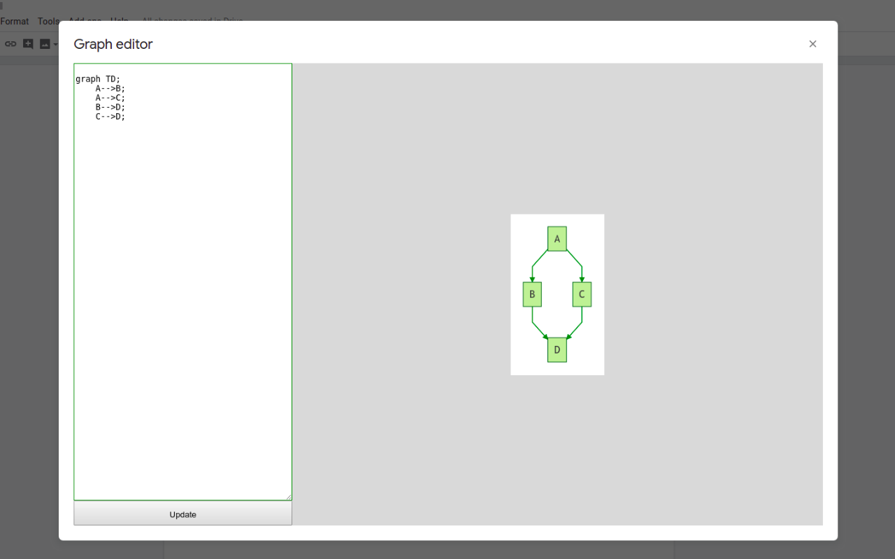

Write text, get graphs
Mermaid for google docs
Add this google docs addon to enjoy the power of the mermaid library in google docs.
This addon lets you create and edit text based graphs directly in the google docs ui
To make a new graph, simply click addons/mermaid/edit
To edit a previously created graph, select it and then click addons/mermaid/edit
This is a very early version of the addon, more like a proof of concept
Features i'd like to add later on :
- Pick style
- Have sequence and gantt graph working
- Nicer menu
- A proper editor with syntax hilight
- Directly editing via a side panel, using the image in the document as a preview
- Remove jquery unless it's necessary
Privacy policy
This addon should not store any data about what you feed to it. It's basically doing everything in your browser and in google apps engine.
It will never have tracking or ads or such crap.